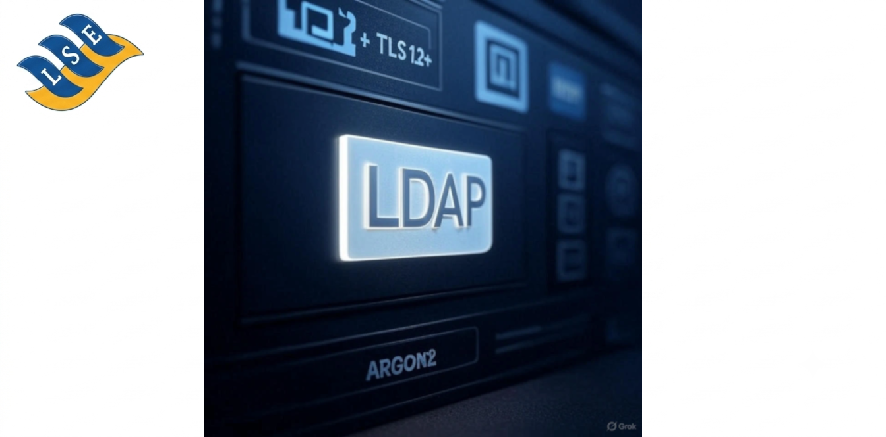
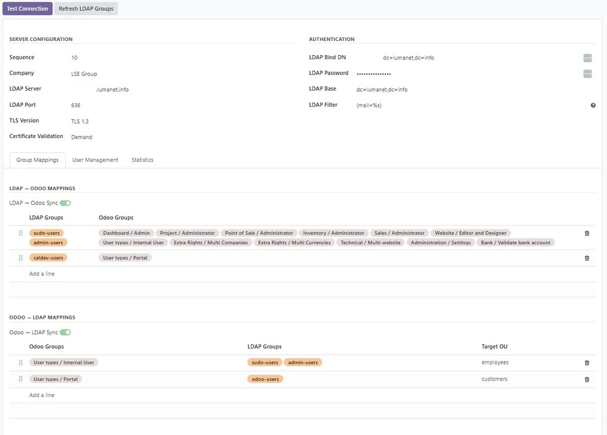
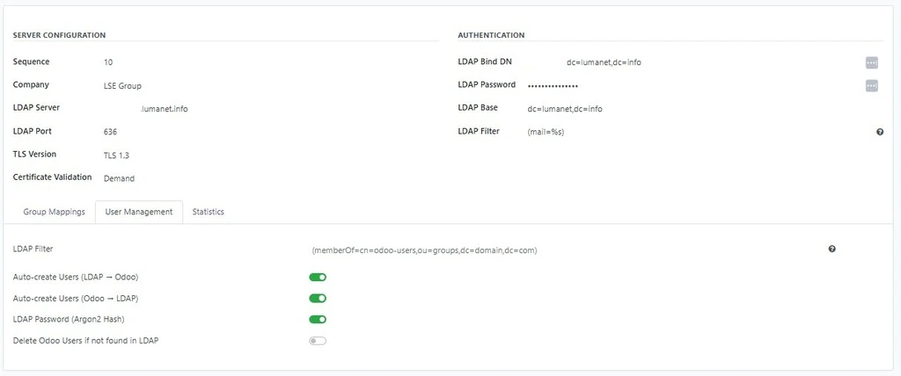
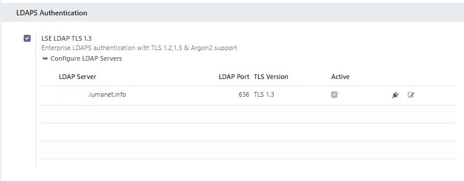

LSE Enterprise LDAPS replaces Odoo's built-in LDAP authentication with a hardened implementation that enforces TLS 1.3 only - no fallback, no legacy protocols, no exceptions.
Built for enterprises running OpenLDAP 2.6+ or Active Directory where PCI DSS, ISO 27001, or internal security policy mandates encrypted directory access on port 636.



Every connection to your LDAP directory is encrypted with TLS 1.3 via WolfSSL. Unencrypted or downgraded connections are refused at the socket level - not just warned about.
Satisfies PCI DSS v4.0 requirement 8.3.2 (strong cryptography for authentication) and 2.2.7 (all non-console admin access encrypted). Audit evidence available on request.
LDAP-authenticated users have their credentials protected with Argon2 hashing - the winner of the Password Hashing Competition, resistant to GPU and side-channel attacks.
auth_ldap moduleWolfSSL is FIPS 140-3 validated, has a significantly smaller attack surface than GnuTLS, and is purpose-built for embedded and security-critical environments. It's the TLS library of choice for PCI DSS Level 1 deployments at LSE Group.
Commercial support: support@lumanet.info
Published by LSE Group — Enterprise Odoo Solutions